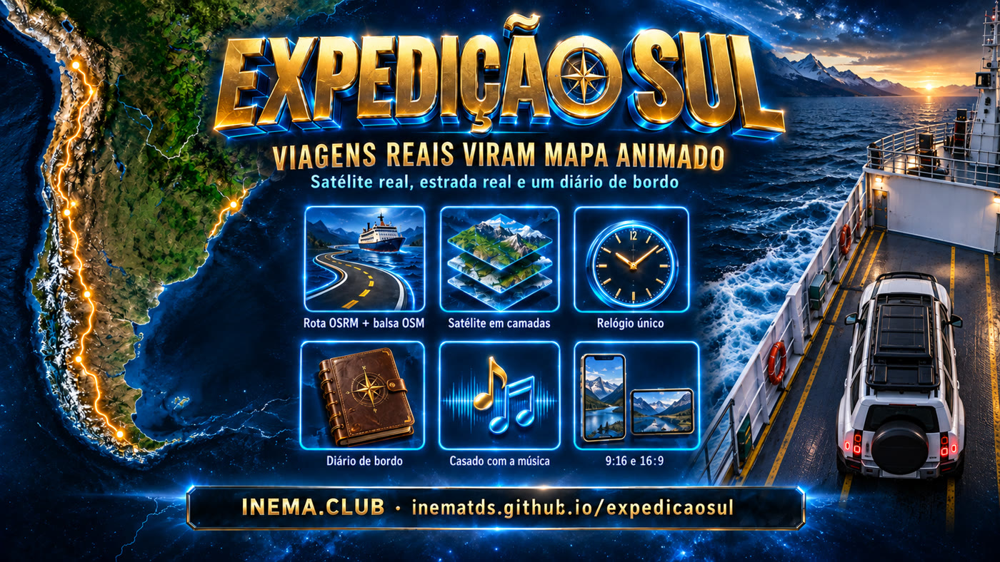
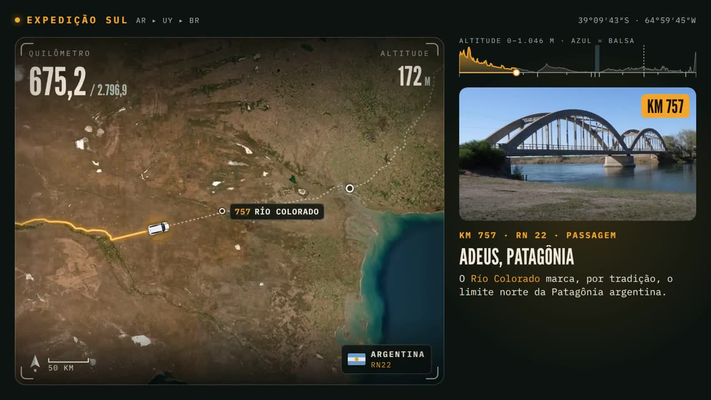

Three car trips through the Andes, the pampas, and Uruguay’s coastline: real satellite, the car on the real road, HUD with km, altitude, and country, plus a logbook with a photo and a verified fact about each place.

Each trip comes out in 9:16 (Reels/Shorts/WhatsApp) and 16:9 (YouTube/TV). The files here are the web version (30 fps); the 60 fps masters are outside git.
Nothing here is assembled by hand in a timeline. One HTML page reads the trip data and draws each frame; HyperFrames records that page as a video.
OSRM road segments, ferry and OpenStreetMap borders, Esri satellite, SRTM altitude, facts from Wikipedia, and photos from Wikimedia Commons with author and license.
Car, camera, traveled line, pins, HUD, altitude track, and cards all come from the same time function. That’s why nothing comes out of sync.
The soundtrack is analyzed (BPM and phase): the car sets off when the beat comes in, the ferry crosses during the calm segment, and the border stamp drops on the return.
There are two halves: Python scripts that prepare the data (run once per trip) and an index.html that draws the frame from that data, for any instant t.

data/, Python)Each trip has its own folder data/ with the scripts and the output. The scripts talk directly to open APIs and store a local cache.
| Script | What it does | It outputs |
|---|---|---|
build_route2.py trip.json | It joins the OSRM legs and the ferry line (OSM) into a single route, with a single cumulative kilometer. It marks where the ferry starts/ends and where the border is (OSM polygon admin_level=2), fits each stop at the right kilometer, and looks up altitude every 5 km from OpenTopoData (SRTM 30 m). It resamples the route every 0.15 km in Web Mercator coordinates z14. | route_full.json → assets/route.js |
build_tiles.py | It downloads the Esri satellite in four levels: ov z7 (overview), cor z8 (route corridor), and for each stop p10 z10 (±1.2°) and p12 z12 (±0.3°). Each level turns into a graded JPG with its position in the world. | assets/map/*.jpg + assets/layers.js |
photos_search.py q.json dir | Looks for candidates in Wikimedia Commons (JPEG, landscape, ≥ 1400 px) and assembles contact sheets to choose. | contact sheets → picks.json |
photos_get.py picks.json | Downloads the selected ones at 1600 px and saves the author, license, and page for each one. | assets/photos/ + photo_credits.json |
fetch_facts.py pages.json | Downloads the text of the Wikipedia entries (ES/PT/EN). Each sentence of the cards comes from there, with the source saved. | data/facts/*.json |
beat.py música.mp3 | Measures BPM and phase of the beat and the bar (spectral flow + autocorrelation). This tells you what second the car sets off and when the border stamp drops. | numbers for the trip.js |
assets/trip.js)This is the video script, written by hand. It says when the car is at each stop; the engine calculates everything else.
// trecho real de volta-defender/assets/trip.js schedule: [ { id: "sma", dep: 9.4, dwellKm: 42 }, // larga quando o groove entra (9,4 s) { id: "bb", arr: 27.0, dep: 28.2, dwellKm: 42 }, // Bahía Blanca { id: "ferry_ba", arr: 50.6, dep: 56.2, dwellKm: 80 }, // embarca em Buenos Aires { id: "ferry_col", arr: 64.8, dep: 66.4, dwellKm: 50 }, // desembarca em Colonia ... ], ferry: { dep: 56.2, arr: 64.8 }, // travessia no trecho calmo da trilha stamps: [{ t: 64.8, s1: "ARGENTINA ▸ URUGUAI", s2: "COLONIA" }, ...], cards: [{ id: "sma", s: 7.2, e: 13.2, img: "sma", km: "0", ttl: "San Martín de los Andes", body: "..." }, ...]
arr/dep = second it arrives and leaves; dwellKm = how many km fit in the width of the frame while it’s stopped there (the stop zoom). cards have start and end (s/e) in seconds; stamps are the border stamps.
index.html, JS + GSAP)One GSAP timeline animates a number, t, from 0 to the duration. On each change it calls render(), which recalculates everything from scratch for that t. HyperFrames advances time frame by frame and records.
tl.to(st, { t: T.dur, duration: T.dur, ease: "none", onUpdate: render }, 0); // render(): para o instante t km = progress(t) // onde o carro está (em km) [x, y] = posAt(km) // ponto da estrada nesse km cam = camera(t) // centro + escala do mapa // → posiciona camadas de satélite, linha, pinos, rótulos, carro, HUD, trilho
Between the departure of one stop and arrival at the next, progress(t) uses a trapezoidal speed profile: accelerates, drives at a constant speed, brakes. While stopped, the kilometer doesn’t change. Since the kilometer is unique for the whole trip, ferry and road share the same axis.
At the stop, the zoom shows dwellKm of width. In the middle of the segment, it zooms out to see ~85% (sine curve) and looks 20% ahead of the car; it doesn’t zoom out on the ferry. The video starts in overview, dips down to the departure, and in the end comes back to the whole route. Zoom is interpolated on a logarithmic scale, so it’s smooth.
The z7 → z8 → z10 → z12 layers are stacked by detail. A sharper layer only enters when it covers the entire frame. That way, you never see a crop edge.
Country (switch at the end of the ferry and at the border), road (from OSRM steps), altitude (SRTM interpolated), and car direction all come from the same km. Pins and labels have anti-collision and disappear when zooms out.
render(): they are elements with data-start/data-duration (HyperFrames tracks), generated from trip.js. The music and effects (whoosh, stamp, ship horn) also have a fixed schedule, synced to the beat.py.trajeto-hua-hum/The first one, custom-made for 54 km of mountain with two cars. Own scripts (build_route.py, build_map.py, gen_cars.py) and water.py, which repaints the lakes with OSM water polygons to remove satellite reflections.
volta-defender/, ida-defender/Made for long trips: legs + ferry + border by configuration (trip.json), satellite in layers by stop. The return re-used the outbound engine and cost less than half.
The index.html has two marked blocks, /*LAYOUT-CSS-START*/ and /*LAYOUT-JS-START*/ (frame size, card positions, fonts). make_16x9.py copies the project by swapping only those blocks; assets enter via symbolic link.
Everything runs locally. The used APIs (OSRM, Overpass, OpenTopoData, Esri, Wikipedia, Commons) are open and have no key.
To preview and render. The version is fixed in the package.json of each project.
npx --yes hyperframes@0.8.72 --helpFor the data scripts: numpy and Pillow.
pip install numpy pillowUsed by beat.py, by the share render (−14 LUFS), and by the version ≤ 44 MB.
ffmpeg -versionThe data for the three trips is already in the repo. To view and render, you just need steps 1, 5, and 6. For a new trip, copy ida-defender/ and redo steps 2 to 4.
The HyperFrames preview opens the frame in the browser, with the timeline to drag.
git clone https://github.com/inematds/expedicaosul cd expedicaosul/ida-defender npm run dev # = npx hyperframes preview
Save the OSRM route for each leg (osrm_A.json, osrm_B.json), the ferry line (ferry.json), and describe legs, border, and stops in trip.json. Separated legs anchored at the ends of the ferry prevent OSRM from taking the route overland.
cd ida-defender/data python3 build_route2.py trip.json # → route_full.json (km único, balsa, fronteira, altitude)
Choose the photos from the contact sheets and log them in picks.json; list the entries in pages.json.
python3 build_tiles.py route_full.json ../assets # satélite z7/z8/z10/z12 python3 photos_search.py q_ida.json photos_cand # buscas por parada → candidatas + folhas de contato python3 photos_get.py picks.json ../assets # fotos + créditos python3 fetch_facts.py pages.json # textos da Wikipedia
trip.jsMeasure the beat and use the timings in the schedule: set off at the entry to the groove, ferry during the calm stretch, border stamp on the return.
python3 data/beat.py assets/audio/music.mp3 12 55 # → bpm, beat, beat phase, bar phase → preencher schedule / ferry / stamps / cards
npx hyperframes check # sobreposição, texto fora do quadro python3 make_16x9.py ida-defender ida-defender-16x9
Master 60 fps + a share version with normalized audio; optionally, the lighter version for Telegram/web.
./render_share.sh ida-defender ida-defender-9x16 # renders/…-60fps.mp4 + …mp4 (−14 LUFS) ./tg_encode.sh ida-defender/renders/ida-defender-9x16.mp4 videos/ida-defender-9x16.mp4 # ≤ 44 MB
Measured in the Claude Code session logs (tokens per call), in API-equivalent dollars. If you use it by subscription, you don’t pay this value per usage; it’s for comparison.
| Video | Agent time | AI cost (US$) | Magnific credits |
|---|---|---|---|
| Hua Hum 9:16 | 55 min | 13.12 | 190 |
| Hua Hum 16:9 | ~5 min | 1.07 | — |
| The return trip (9:16 + 16:9) | 38.5 min | 15.18 | 180 |
| The outbound trip (9:16 + 16:9) | 24.4 min | 6.85 | 160 |
| Total | ~2h03 | 36.22 | 530 |
For anyone who wants to reuse the engine.